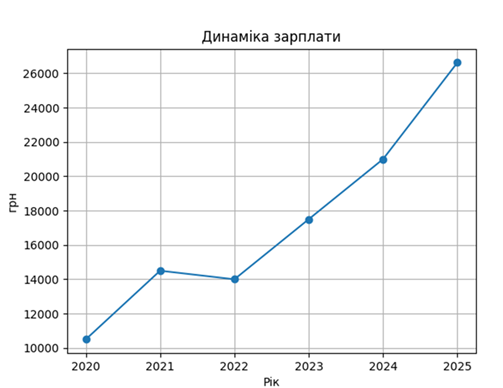
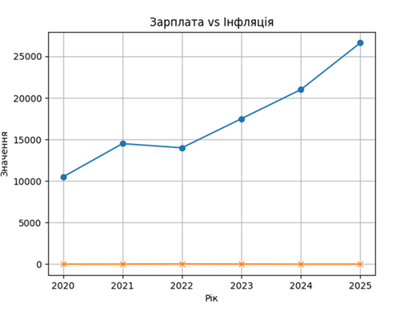
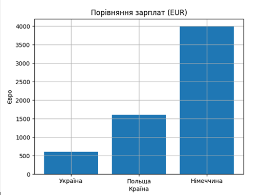

Середня заробітна плата є одним із ключових індикаторів стану економіки. Вона відображає рівень доходів населення, купівельну спроможність та ситуацію на ринку праці.
За даними Державної служби статистики України (stat.gov.ua), у 2025 році середня зарплата становить близько 26 623 грн.
Аналіз показує загальну тенденцію до зростання, з тимчасовим спадом у 2022 році.

Формула реальної зарплати:
Real Salary = Nominal Salary / CPI
Формула CPI:
CPI = (ціни поточного періоду / базового) ? 100
Навіть при зростанні зарплат реальний рівень життя може не змінюватись через інфляцію.


Ринок праці в Україні стає дефіцитним, що призводить до зростання зарплат. Однак значна частина цього зростання пояснюється інфляцією.
Також зберігається суттєвий розрив із країнами ЄС, що стимулює трудову міграцію.
Середня зарплата є важливим, але недостатнім показником. Для повного аналізу необхідно враховувати інфляцію та інші економічні фактори.
Ключові слова: середня зарплата Україна, економіка України, інфляція, ринок праці